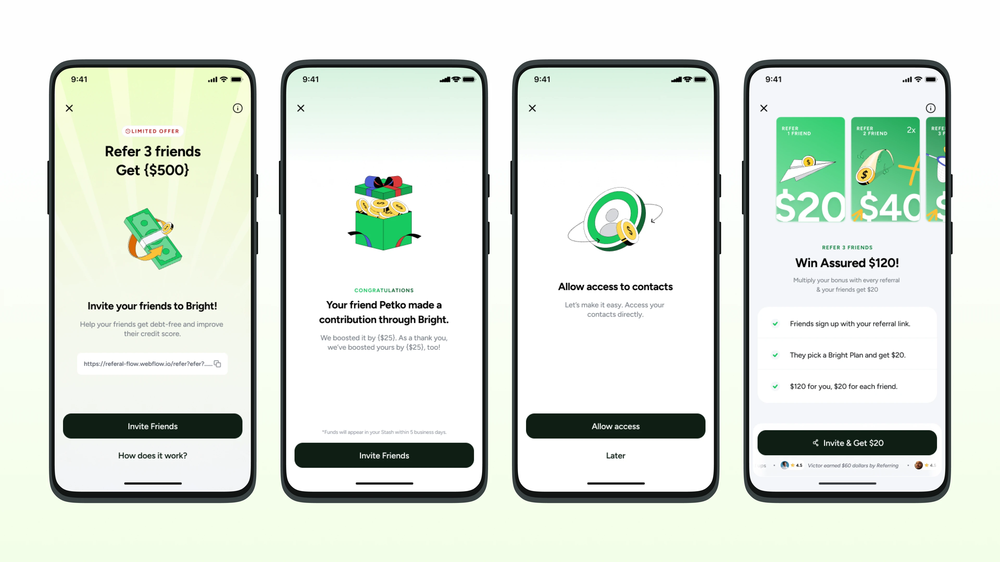
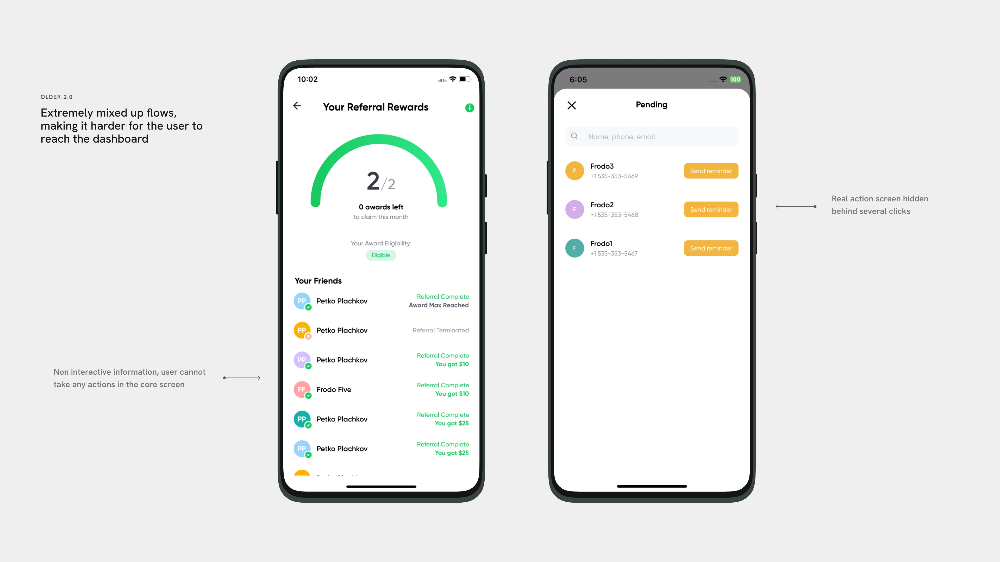
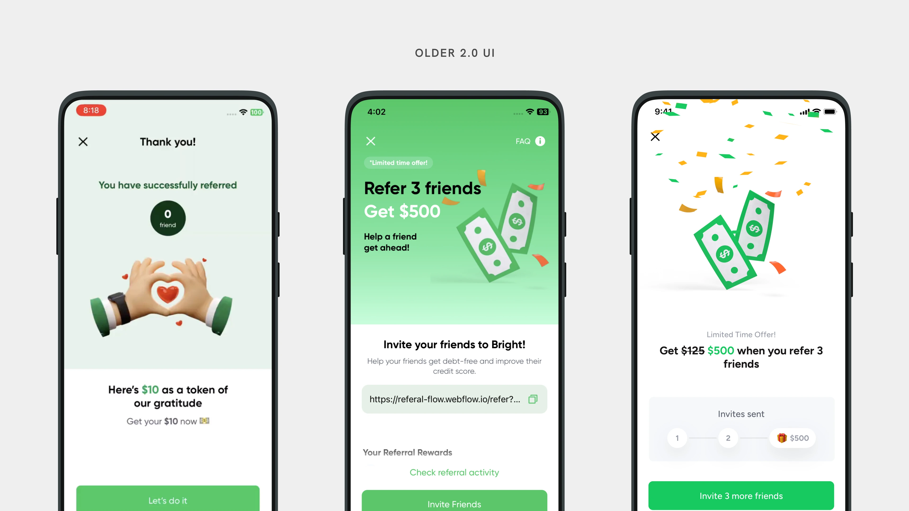
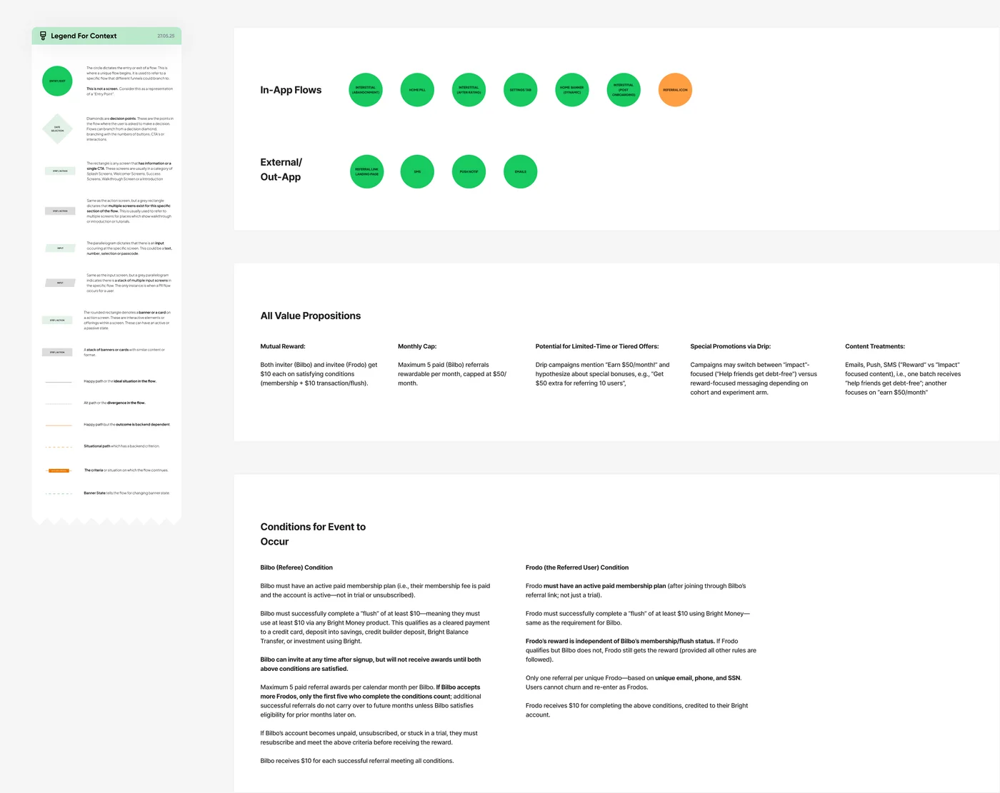
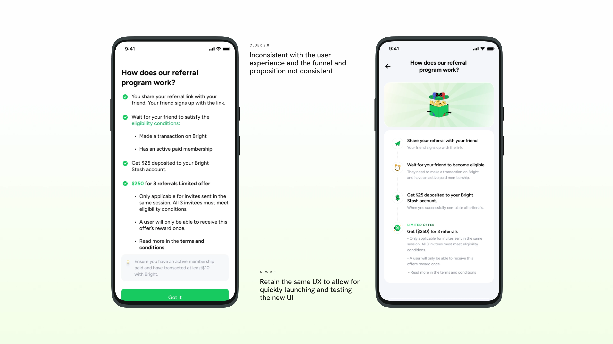
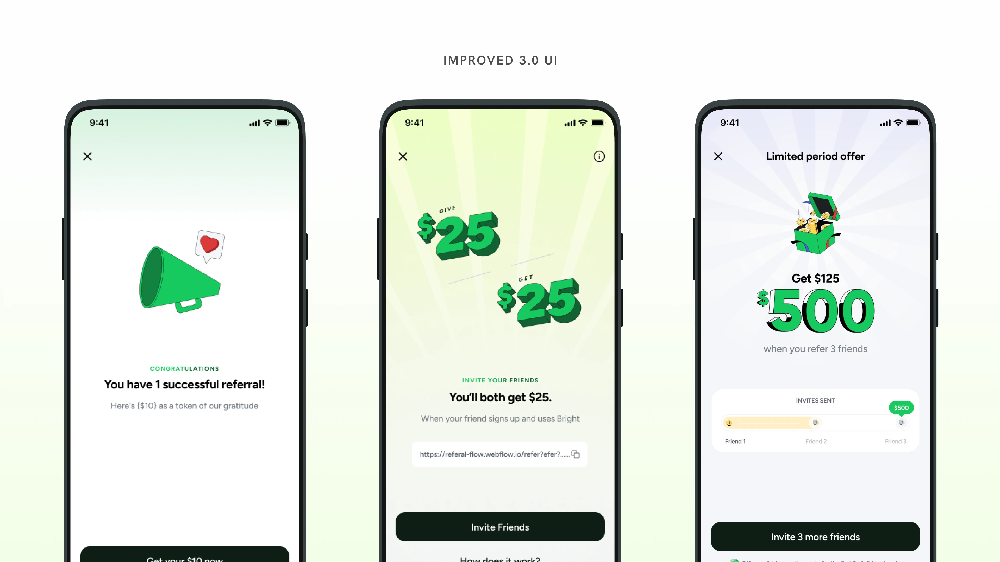
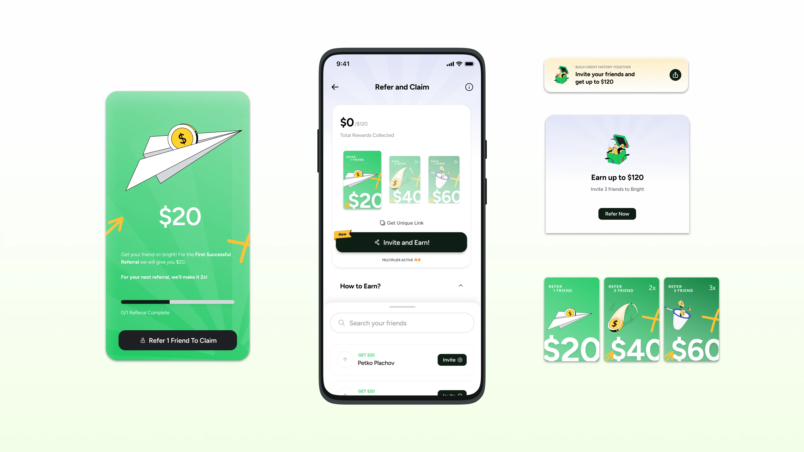
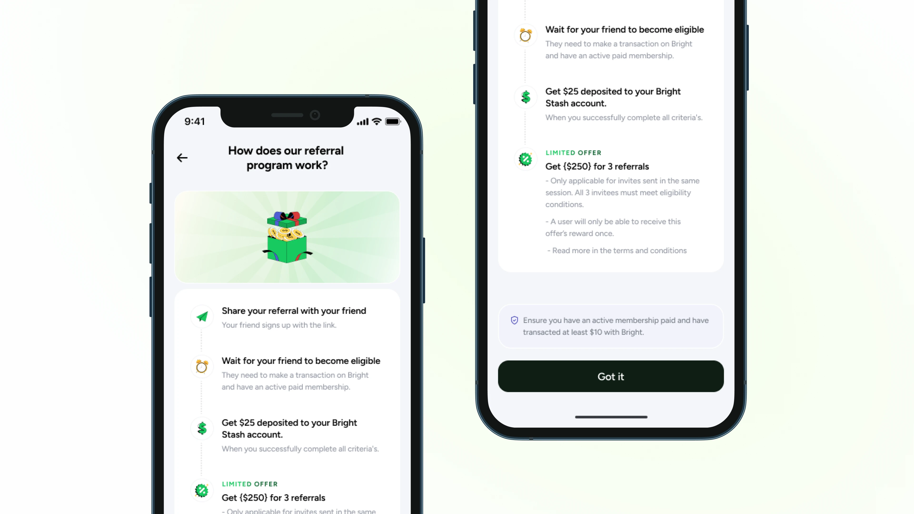

Referral Redesign
Rebuilt the referral flow and made the offer card testable by Growth without engineering. Not shipped yet, so no conversion data.

Overview
A referral flow Growth can test without a dev sprint.
Problem
The 2022 referral screens showed none of the new reward rules, and Growth needed a full dev sprint for every messaging test on the offer card.
My part
Sole owner across three phases and 13 months: the UX flows, the offer card rebuilt as a modular component Growth controls, and the hi-fi screens.
Result
Hi-fi signed off and aligned with Growth and product, waiting on a dev sprint. Not shipped, so there is no conversion data yet.
Context
Who tells a friend about an app they barely use?
That was the real question. Not how to clean up the flow, but whether anyone actually wanted to refer the app, and whether the screen helped them do it.
The company is a US fintech app. It helps people manage credit card debt, pay bills, save, and build credit. The referral programme is one of the only organic growth levers the product has: a $25 reward for every friend who signs up and completes a qualifying transaction.
I owned this project for 13 months, across three separate phases, each revived when Growth had bandwidth. The brief when it started: Referral 2.0 → 3.0. Nothing else.
Problem
The 2022 UI was doing the asking, not the selling.
The referral flow had not been touched since 2022. The reward rules had changed: new qualifying actions, a $25 ceiling, a $10 minimum transaction, a five-referral monthly cap with no carry-over. The screens showed none of it.
- Unreadable reward rulesThe reward ceiling and qualifying conditions were buried in copy. Users couldn't skim what they would actually earn.
- A sprint per testEvery PLU messaging test cost Growth a full dev sprint. The PLU, the in-app card surfacing the referral offer, was static.
- An outdated styleThe old screens were built on a design language the product had since replaced.

Older 2.0: extremely mixed-up flows, making it harder for the user to reach the dashboard. The real action screen sat behind several clicks, and the core screen was non-interactive information.

Older 2.0 UI.
Goals
Make the reward obvious, and put the offer in Growth's hands.
Process
Three phases, with eight months between two of them.
2 monthsUX from scratch. I mapped the full referral experience in FigJam, built the 3.0 UX flows, explored a scratch-card treatment for the referral card, ideated PLU screens, and locked the illustration direction with the design director.
2 monthsUI hygiene across all touchpoints. Illustration delivered by the illustrator. Screens ready, aligned with the design director, shared with Growth. Then deprioritised: the RMS track took Growth's bandwidth, and the screens sat for eight months.
2 monthsThe design director revived it with one constraint: no backend involvement. Wireframes done in a day. Hi-fi closed in a week. Aligned with Growth and product. Closed.

FigJam: Referral Flow Indexing.
Key decision
The constraint that made Phase 3 faster.
The design director's brief on revival: no backend involvement. I took that further than a refresh.
The real ask surfaced in the minutes of the meeting with Growth. Growth needed a PLU system they could control dynamically: vary the message, test the offer, swap the visual, with no dev sprint. That meant designing the PLU as a modular component, not a fixed screen.
The constraint forced the right outcome. A PLU Growth owns is more valuable than one that looks better.

Older 2.0 was inconsistent with the user experience, and the funnel and proposition were not consistent. New 3.0 retains the same UX so the new UI can be launched and tested quickly.
Solution
The redesigned referral, from home card to confirmation.
The $120 shown in the redesigned screens is a limited-time promotional offer, not the standing reward.

Improved 3.0 UI.

The components: the Refer and Claim dashboard, the home banner and upsell card that Growth controls, and the $20, $40 and $60 reward cards.

How the referral program works: share, wait for eligibility, get paid.
Outcome
Signed off and in the queue, not yet shipped.
Hi-fi signed off by the design lead. Aligned with Growth and product. Waiting on dev sprint allocation.
Referral templates are P0 as of Aug 2026, blocked on compliance availability and Growth team leave. Not dropped, in queue.
No conversion data yet. The hi-fi hasn't shipped.
In hindsight
Three things I would challenge in my own work.
Takeaways
What I would do differently.
- Push for a lightweight PLU test as soon as Phase 2 ended. It would have closed the eight-month gap. I did not push for it, and that is the one I would take back.
- Treat the Phoenix constraint as a design tool. It felt like a limitation. It was not. Designing modular from the start (message, visual and CTA as independent variables) produces something Growth can actually run experiments on. I would apply that constraint deliberately next time.
- Prototype the illustration question instead of sending a Slack message.